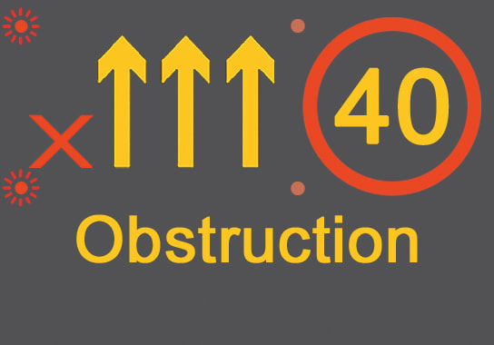
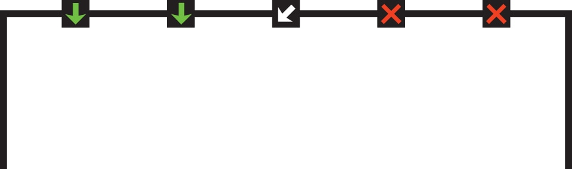

Signs and Signals > Light signals controlling traffic
Light signals used to control traffic, including traffic light signals, flashing red lights, motorway signals and lane control signals.
Traffic light signals

RED means ‘Stop’. Wait behind the stop line on the carriageway

RED AND AMBER also means ‘Stop’. Do not pass through or start until GREEN shows

GREEN means you may go on if the way is clear. Take special care if you intend to turn left or right and give way to pedestrians who are crossing

AMBER means ‘Stop’ at the stop line. You may go on only if the AMBER appears after you have crossed the stop line or are so close to it that to pull up might cause an accident
A GREEN ARROW may be provided in addition to the full green signal if movement in a certain direction is allowed before or after the full green phase. If the way is clear you may go but only in the direction shown by the arrow. You may do this whatever other lights may be showing. White light signals may be provided for trams
Flashing red lights
At level crossings, lifting bridges, airfields, fire stations, etc.
At level crossings, lifting bridges, airfields, fire stations, etc.

At level crossings, lifting bridges, airfields, fire stations, etc.
Motorway signals

You MUST NOT proceed further in this lane

Change lane

Reduced visibility ahead

Lane ahead closed

Temporary maximum speed advised and information message

You **MUST NOT** enter or proceed in the left lane, temporary mandatory maximum speed limit and information message

Temporary maximum speed advised

End of restriction
Lane control signals

Lane control signals
Green arrow - lane available to traffic facing the sign
Red crosses - lane closed to traffic facing the sign
White diagonal arrow - change lanes in direction shown
Red crosses - lane closed to traffic facing the sign
White diagonal arrow - change lanes in direction shown